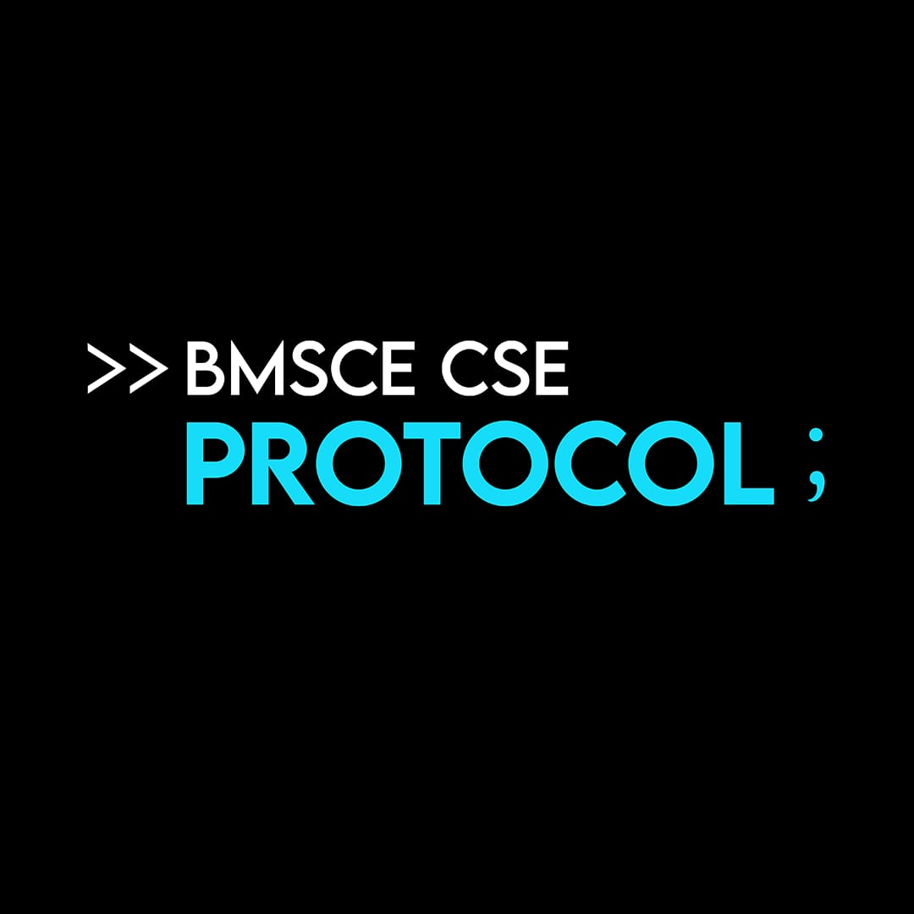

ProtocolEmail: protocol.cse@bmsce.ac.in
Aaryan Prakash (President): +91 82176 17133
Bhavya J Makadia (Vice President): +91 80888 24847
Address:
B M S College of Engineering
Bull Temple Road, Basavanagudi
Bengaluru - 560019